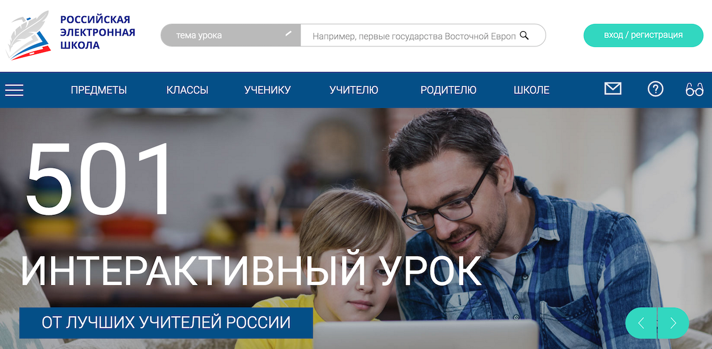

О себе
Я веб-разработчик, который не против много и усердно работать, потому что мне нравится то, что я делаю. Адекватно отношусь к критике, умею работать в команде, спокойно и аргументировано доносить свою точку зрения. Стараюсь писать чистый и красивый код, люблю хорошо написанные мануалы, успешно разбираю чужой код. Не люблю работать в спешке и "на скорую руку", но, когда надо, умею вписываться в дедлайны. Когда что-то в коде не работает, бывает очень трудно пойти лечь спать и отложить этот вопрос на завтра. В работе предпочитаю проявлять здоровый перфекционизм и внимание к деталям, ведь любая работа складывается из множества мелочей.
Есть желание лучшим образом применить свои навыки и потенциал в решении сложных и интересных задач, одновременно удовлетворяющих потребности вашей компании и моё стремление к получению новых знаний и навыков.
Технические навыки
PHP
5 лет
>=5.3, 7.0
Фреймворки: Symfony (^2.7, ^3.0), Yii2
Система контроля версий: Git (Git flow)
Тестирование: Codeception, PhpUnit, Mockery
Принципы: SOLID, KISS, DRY
Код-стайл: PSR
Базы данных
5 лет
Реляционные: PostgreSQL, MySQL
"Ключ-значение": Redis, Memcached
Javascript
4 года
NodeJS, ReactJS, Webpack, ES6
Html5 & Css3
5 лет
Responsive Web Development, HTML5 Boilerplate, SASS, SEO, Bootstrap
DevOps
Локальное окружение: Docker, ранее - Vagrant, Ansible
Системы обмена сообщениями
RabbitMQ, Gearman
Полнотекстовый поиск
Elasticsearch, Sphinx
А также
Python, XDebug, BlackFire, Ubuntu, Z shell, PhpStorm
Проекты

Терминал ТАСС
- Система продаж и распространения
- Real-time приложение для подписчиков на новостные ленты
- Бекенд спроектирован с нацеленностью на сервисно-ориентированную архитектуру
- Бекенд и фронтенд разнесены, всё взаимодействие происходит через API
- Добавление в поисковый индекс текста материала, автоматическая категоризация и тегирование производится через очереди
- Допустимая задержка с момента выхода новости и получения её подписчиком составляет несколько секунд
- Пользователь получает новостные обновления через websocket
- В разработке
- 
Российская электронная школа
- Федеральный проект "Российская электронная школа" должен стать самым крупным источником образовательных материалов в российском интернете
- Создан личный кабинет публикатора электронных уроков
- Публикатор размещает архив с уроком или указывает ссылку для скачивания
- Скачивание отправляется в очередь, урок распаковывается и измекается мета-информация
- Создано отдельное приложение для перекодировки и стриминга видео
- Использование абстракций над ffmpeg и файловой системой, управление параметрами конвертации через файлы конфигурации
- Конвертирование загруженных файлов в MPEG-DASH, HLS, MP4, WebM
- Простое API для получения списка загруженных видео и информации о них
- Логирование информации о потраченном на конвертацию времени и свободной оперативной памяти
- Извлечение структурированной информации о тестах(XML, IMS QTI), содержащихся в уроке, построение на основе неё модели данных для тестов
- В данный момент находится в апробации у региональных школ

Фотобанк РГО
- Фотобанк Российского географического общества
- Разработка модели данных для сервиса загрузки и хранения фотографий
- Асинхронная обработка фотографий в очередях (RabbitMQ)
- Определение основной палитры фотографии, определение персептивного хэша
- Фронтэнд: доработка drag'n'drop загрузки фотографий в личном кабинете, галереи с бесконечным скроллом и слайдера с автоматической дозагрузкой фотографий
- Наложение водных знаков на превью фотографий

window.edu.ru
- База образовательных ресурсов для студетов и преподавателей
- 60 тысяч уникальных посететелей ежедневно
- Переход со старой версии сайта на Symfony2
- Решено было переделать сайт с нуля
- Кэширование и оптимизация запросов
- Полнотекстовый поиск на ElasticSearch
Опыт работы
Сентябрь 2016 - н/в
Старший разработчик
ТАСС
Функционал:
- Участие в проектировании и создании новых приложений компании с использованием сервисно-ориентированного подхода
- Разработка сервисов на основе фреймворка Yii2
- Код-ревью и помощь сотрудникам младшего уровня
- Документирование технческих решений в Confluence
Сентябрь 2014 - Сентябрь 2016
PHP разработчик
ФГАУ ГНИИ ИТТ «Информика», Отдел прикладного программного обеспечения
Функционал:
- Разработка web-приложений и сервисов компании на базе фреймворка Symfony
- Участие в обсужнении и создании архитектуры проектов
- Рефакторинг проблемных мест
- Код-ревью. Доработка своего кода и высказывание предложений по чужому
- Написание проектной документации
Апрель 2013 - Сентябрь 2014
Начальник отдела информационных технологий
Институт спектроскопии РАН (ИСАН)
Функционал:
- Создание на базе сайта ИСАН полнофунциональной CMS с возможностью редактировать содержимое разделов, добавлять новости и объявления
- Создание личного кабинета для научного состава института с возможностью редактировать личные данные и добавлять научные публикации
- Разработка планов модернизации сетевой инфраструктуры и убеждение дирекции в её необходимости
- Руководство работ по модернизации устаревшей структурированной кабельной системы института
- Закупки сетевой и компьютерной техники
Март 2012 - Апрель 2013
Ведущий инженер по информационному обеспечению
Институт спектроскопии РАН (ИСАН)
Функционал:
- Создание сайта ИСАН
- Написание скриптов для парсинга информации о сотрудниках и научных публикаций института из обычного текстового формата
- Создание нового серверного помещения, запуск нового сервера и цифровой АТС
- Настройка и администрирование сервера ИСАН
- Обеспечение работоспособности сетевого и коммутационного оборудования
- Проектирование и начало работ по обновлению устаревшей структурированной кабельной системы института
Июнь 2009 - Март 2012
Инженер ОМОИ, Младший научный сотрудник
Троицкий Институт Инновационных и Термоядерных Исследований,
Очная аспирантура
Образование
Московский инженерно-физический институт (МИФИ)
Инженер-физик по специальности "Физика кинетических явлений"
2003-2009 гг